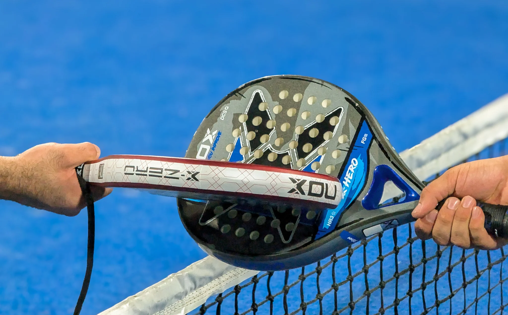
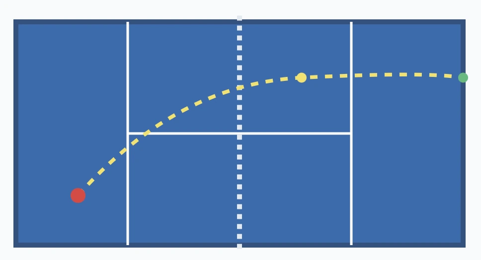
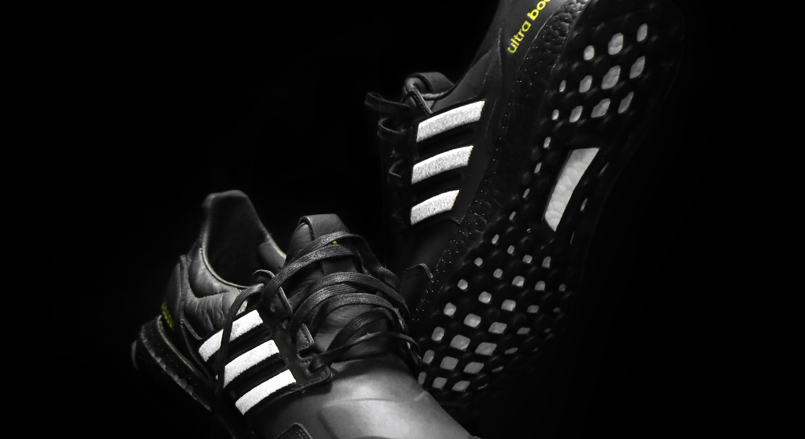
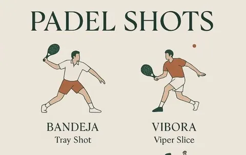
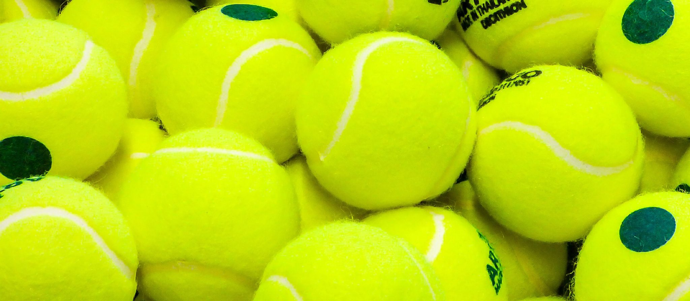
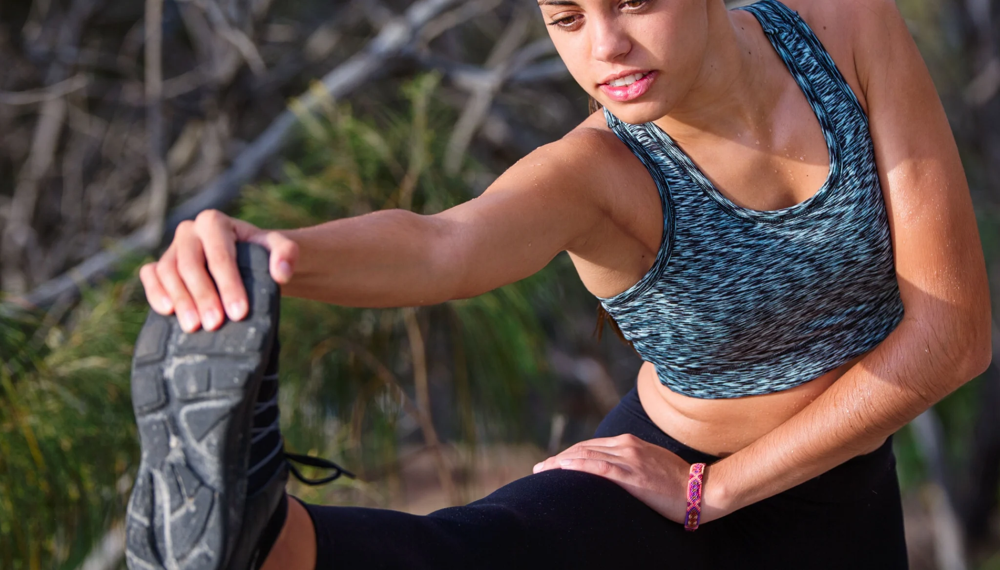
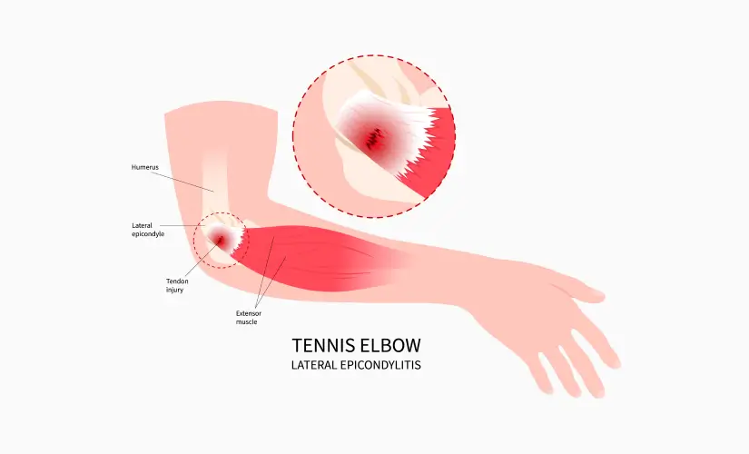

Matériel
Comment choisir sa raquette de padel quand on débute
Formes, poids et mousse : découvrez les principaux critères pour choisir une raquette adaptée à votre niveau et à votre confort.
Votre média indépendant pour découvrir le padel, comprendre ses règles et choisir son matériel avec des guides pratiques. Que vous cherchiez à assimiler les règles officielles du padel, à trouver votre première raquette ou à dominer le jeu, vous êtes au bon endroit.

Formes, poids et mousse : découvrez les principaux critères pour choisir une raquette adaptée à votre niveau et à votre confort.

Dimensions du terrain, service à la cuillère, comptage des points et gestion des vitres : tout est expliqué.

Pourquoi les chaussures de running sont-elles moins adaptées ? Découvrez les semelles et critères de maintien utiles au padel.

Le dictionnaire indispensable pour comprendre le vocabulaire et maîtriser les coups spécifiques de ce sport.

Maîtrisez les volées, l'occupation de l'espace et la prise de filet pour asphyxier vos adversaires en match.

Différences avec le tennis, pression interne, durée de vie utile et astuces pour prolonger leur rebond.

Réveil articulaire, mouvements progressifs et routine générale pour préparer la séance.

Épicondylite, confort de frappe et critères de choix d’une raquette en cas de sensibilité du coude.